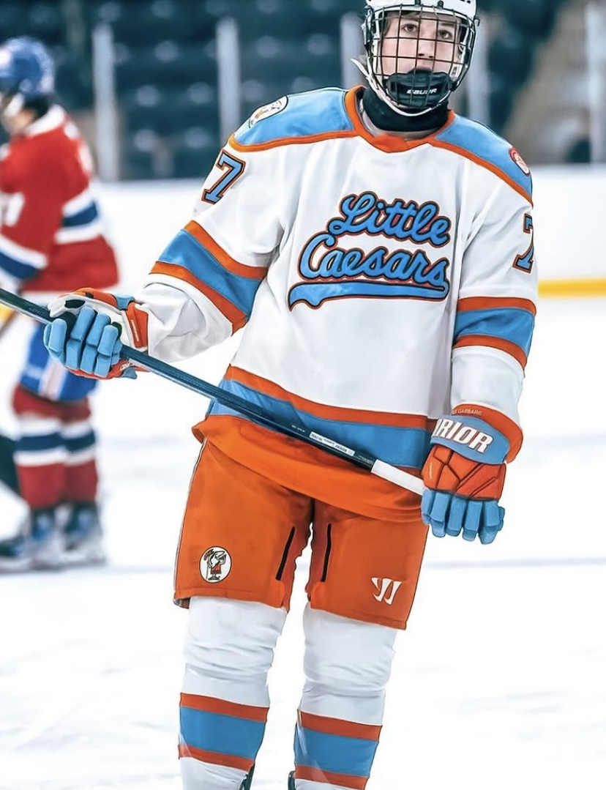

Discover
Scouting Report - Brenner Lammens
Top U16 prospect Brenner Lammens has shown why he should be one of the first players off the board in this years draft.
Read full report >
April 8, 2025
Scouting Report - Porter Fabbri
Comming off a massiv eyear production wise, Burlington Eagles forward Porter Fabbri is poised to make the jump out of U18 and show everyone what hes all about.
Read full report >
April 7, 2025
Scouting Report - AJ Underhill
One of the most promising DFDs in this years OHL Entry Draft, AJ Underhill mixestogether physicality and defensive IQ to take the game back to a generation past.
Read full report >
April 5, 2025
Top 20 - 2025 OHL U16 Draft
View head scout Drake White's top 20 players eligible for the 2025 U16 OHL draft.
View full list >
April 4, 2025
Scouting Report - Nick Ludgate
With an incredible IQ and defensive game, Nick has proven time and time again to be an effective two-way center that might be a sneaky pick in the upcoming U18 OHL Draft.
Read full report >
April 3, 2025
Scouting Report - Thomas Leone
The 2007-born star finished around the top of the league in points with Halton, proving to be one of the teams biggest contributors at boths of the ice.
Read full report >
April 2, 2025
Scouting Report - Marcus Carter
One of the most impressiv breakouts in the U18 season, Marcus Carter exploded onto the scene with the Halton Hurricanes this season, displaying elite two-way tendencies, which will make him an appealing draft choice for any OHL team.
Read full report >
April 1, 2025
Top 35 Skaters - 2025 OHL U18 Draft
View head scout Drake White's top 35 players eligible for the 2025 U18 OHL draft.
View full list >
March 31, 2025
Scouting Report - Cameron Gelinas
With great skating and positioning, Cam has proven to be a legitimate defenseman at this level, and has shown flashes of being able to hang at the next level.
Read full report >
March 30, 2025
Scouting Report - Chase Partridge
Chase Partridge is a player who embodies his ability to utilize what he has in the toolbox to be a dominant offensive force on one of the best lines in the OMHA.
Read full report >
March 6, 2025
Scouting Report - Joseph Szarka
This Brantford 99ers defenseman shows what can happen when you know how to play the game, and grow into your size the right way.
Read full report >
March 2, 2025
Scouting Report - Brock Chitaroni
Brock Chitaroni is an elite forward playing for Barrie this year, and has continued to impress all throughout the season.
Read full report >
February 12, 2025
Scouting Report - Brighton Anderson
As a high skilled two-way forward, Brighton is most similar to a player like Travis Konecny thanks to his high tempo, and relentless preasure, which causes hturnovers and generates offensive chances.
Read full report >
February 5, 2025
Scouting Report - Anthony Georgiev
With a massive, hulking frame and a constant mean streak, Anthony provides his team with a reliable shut down defender that can muck it up and produce offensively.
Read full report >
February 4, 2025
Scouting Report - Alex Forrest
Alex Forrest is an elite offensive defenseman out of Oakville, and has proven this year why he should be amongst the top of his class.
Read full report >
February 2, 2025
Scouting Report - William Martyn
When it comes to being dailed in, Will Martyn dominates. Rarely rattled and highly athletic, he gives his team a chance to win night in and night out.
Read full report >
January 31, 2025
Scouting Report - Ari Lantz
Not only can he play a fantastic defensive game, which allows him to remove players from a game entirely, he also possesses the versatility to slide back on D as well when needed.
Read full report >
January 27, 2025

Scouting Report - Kage Flory
Kage was the top dog in Buffalo last season before moving to Detroit, where he is again showing why he is one of the top defenseman in this class thanks to his mix of an old and new style of game, with crushing hits and swift skating.
Read full report >
January 19, 2025